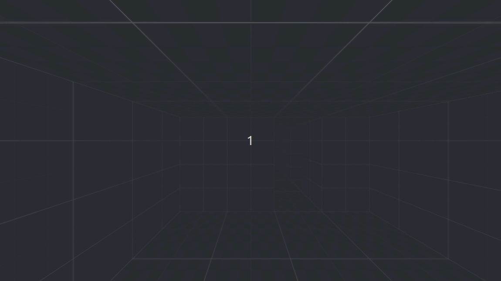

Dungeon Crawler Practice Project, Part1: The Start
Publish date: May 16, 2023Tags: godot4 devblog dungeon crawler
Table of contents
After finishing my last tutorial and after a longer game dev hiatus, I wanted to do a small to medium size practice game dev project. I do have an idea for another, somewhat bigger project for which I already did a little prototyping, but I realized that there are a few things I want to engage with first. For one, while I have a few somewhat finished jam games, ColoRise (https://selinadev.itch.io/colorise) is the only game I consider a “complete project”. So, the first thing I want to practice is finishing a project again, getting it to a state where I can consider it sufficiently polished and complete. Beyond that there are a few skills or experiences I feel I am lacking, which I want to exercise.
For that reason I have chosen a (simple) first person grid based dungeon crawler as a practice project. It is a genre I find somewhat charming. I have to admit I have little experience with the genre, but I have a lot of nostalgia from playing Redshift’s Legacy on my dad’s Nokia Communicator. I do have experience with roguelikes, even on the development side. So the basic plan is to take the Complete Roguelike Tutorial (rogueliketutorials.com) as a framework for a grid based dungeon crawler and implement it in 3D.
Now, with the basic goal out of the way let me go what I want to do and practice, and why.
What I Need to Practice
I mentioned another project idea I had, for which I already did some prototyping. That project is a tactical battle RPG. I was inspired by games like Gloomhaven, Dungeons and Dragons, and For the King. Besides, I really like playing couch coop with my partner, so something like that sounded like a good idea. And I really do hope that I can create that game one day, but while working on the prototypes I realized that there are some things I want to try and exercise first.
Godot 4
The first thing I need to practice for that other project is Godot 4. While I consider myself to have gotten relatively proficient with Godot 3, I did notice when using Godot 4 that some things are a bit different now. One example that is very relevant to me are Tweens. If you have read any of my tutorials you know how much I like procedural animation via Tweens. And Tweens have changed a lot between Godot 3 and 4. And you can bet I want to do a lot of procedural animation again in my next project, but first I want to familiarize myself with the new Tweens. Beyond things that have changed there is new functionality. It may seem like a smaller detail, but I do like for example the new export annotations, specifically the categories. I am confident that I will be able to use all these new and changed features, but I want to get comfortable with them before using them in a bigger project.
Grid-Based Movement and Turn-Based Combat
This topic directly relates to the planned project. As a tactics game it will rely a lot on grid-based movement, and the combat will be turn-based. It’s not so much that I consider this a deficit of mine, but rather that I see an opportunity in this practice project to try out a few approaches. This way, once I get to the bigger project I hope that I have a better idea of what might work and what won’t work. I’d rather figure things out with a smaller project than refactor a bit project a few times. This is actually why I decided to not develop the prototypes any further, because with every new feature I noticed that it would require a lot of changes in the existing code, as I hadn’t anticipated what I will need, or where a feature might be incompatible with a later feature. A dungeon crawler has just enough similarities that I can hope to get an overview of what I will need and how things can work together in a tactics game.
Git(Hub) Workflow
Git is a tool that I’ve been using for a while now, and that I’ve come to like. However, by now I feel that I have originally been using it for the “wrong” reasons. The thing is that I often switch devices. I have a PC at home, a private laptop, and a work laptop. At home I switch between the PC and the laptop depending on how I feel. Sometimes I use my PC in my office when I want do more focussed work. Sometimes I want to feel coding like a hobby, and especially when I’ve been working from home on that day I just want to code on the couch. And at work there are some days where I’ll need my laptop, e.g., to hold a presentation, and some days where I don’t need it, and will take my private laptop.
Before using Git all my projects would go into folders on my Nextcloud storage and synched between devices. However, occasionally I’d get synch conflicts and loose some work. That’s when I was motivated to switch to Git. And I’ve been really happy with it since. However, as you probably already suspect from why I needed it, I wasn’t using Git to it’s best potential. I was merely using it to switch from one device to the next. Commits didn’t follow any logic other than “this is the state of the code before I’m switching devices”. I didn’t commit because I’ve just finished a coherent chunk of code, but because it was in the evening, I wanted to go to sleep, and I knew I’d have to use the other laptop the next morning. Beyond that I scarcely used any features. My use case didn’t require branching, so I barely have used them.
Now, eventually I might want to collaborate more, maybe even contribute to an open source project if I one day have the time and skill. I also want to reap the benefits that proper git workflow can give, like always having a deployable project. Maybe I’ll even play a bit with continuous integration, we’ll see. But I know that there is a lot to learn, bad habits I want to get rid of and good ones I want to establish. Eventually I might open source this project, as developing it out in the open would hold me accountable.
Multiple Inputs
While prototyping the tactics game I knew that eventually I’d want it to work with different input types. I have a habit of making games that work with just the mouse. When done right this lends itself to work with touchscreens as well. But as I’ve mentioned I ultimately want to play it as a couch coop game, which works best with controller input. I noticed quickly that these different input methods would require different considerations for UI.
As you can tell from my rant there is a lot to consider to get things working the way I want to. And as with the grid based movement above I want to get mistakes and bad approaches out of the way before I tackle a bigger project. So when it’s done, I want the dungeon crawler to support some form of computer input (i.e., keyboard, mouse, or maybe both), controller input, as well as touch screen input. The last one is not only nice for web exports (i noticed that quite a few people like to play games on gotm.io on their phone), but it also gives me the opportunity to explore exporting the game to Android.
Create Music
This is one I’m the most intimidated by. I’ve reached a level with my drawing skill where it’s not perfect, in fact it’s rather amateurish, but for most things I can get something reasonably looking done in a reasonable amount of time. It’s better than programmer art, so for a game jam it is quite useful to get some custom art assets in a cohesive style. However, while my drawings look better than absolute beginner I am lost when it comes to music. I have sometimes managed to make some free sound effects and music tracks work with a game, but I always wish that I could get what I can get with drawing: custom art assets in a cohesive style (of reasonable quality). I have occasionally tried to learn a bit about music theory, but whenever I have tried to do something myself I’ve gotten discouraged. When using a DAW I feel a bit lost, as while I can see the timeline I can only properly experience the temporal aspect of the piece by listening to it, and I feel overwhelmed by using multiple layers.
I have to admit, this is the goal that I am most likely to scrap. If I learn all the other things but still have to rely on other people’s music it won’t be the end of the world. However, I do realize that like other things, music is something that needs practice to get better, so if I want to get to that point I described above, I need to get started somewhere.
Composition
As I was just writing about music, now is a good opportunity to also write about composition. However, here I mean the programming principle. I have been using composition, as well as inheritance. However, I realized that for the tactics game I would probably need to lean a bit more on composition, just so I don’t run into some dead ends with inheritance later. I have researched a bit how others do composition, especially in Godot, and want to put this into practice. While for this relatively small project, especially with it’s relatively clear scope, I would get away with inheritance just fine, I again want to practice this approach for the bigger project. I expect composition to allow me to be more flexible in extending and building up that game, especially when what I want to implement exactly is still open-ended.
Creating Visuals
Back to a more artistic topic (I would have grouped these sections, but then I couldn’t have started the section above with that pun). As I mentioned above, I am starting to get comfortable creating my own visual assets. I don’t always do, as it can be time consuming, especially during a game jam with limited time. And while it is not an area I consider a deficit, like some mentioned above, this project is an opportunity to practice this some more. This will also make this game more “mine”, and on top of that will make open sourcing it easier, as I have to worry a bit less about attribution and licensing.
I’ll write a bit more about these visual aspects below. But first, let me give you an overview of the current state of the project.
Current State
I have started the project in Godot 4 and already implemented a few basic things. As mentioned above, I’m loosely following rogueliketutorials.com, specifically the newer 2020 version. I have followed several versions of this tutorial, and did so both in Python and once converting it to Godot 3 on the fly. Maybe one day I’ll do the “r/roguelikedev does the complete roguelike tutorial” event in Godot and write about that. However, this means I have some familiarity with the code, concepts, scope, etc. of that tutorial.
Codewise, I have already implemented a game map that can map positions on a 2D grid to positions in 3D space. A dungeon generator generates a simple dungeon that can both be represented by this map, as well as built into a 3D dungeon (which currently consists of blocks with Kenney’s prototyping textures).
I also have the base for a game Entity. At the moment this only handles it’s grid position, which it can translate to a world position using the game map. I do already have enemies that are positioned in the dungeon, but at the moment they are only white capsules, lifelessly standing around. More interesting is probably the player. This is an entity without visual representation, carrying around a camera. And, it moves! Smooth, animated movement is something that will come in the future, but it’s already pretty satisfying to step through the dungeon.
I am using the approach from the tutorial, and handle all the actions with the command pattern. Currently, I only have a rudimentary turn system in place, and as the enemies don’t do anything yet a proper one wouldn’t do anything more interesting. But I have already layed out the foundation for handling these commands, and for using them with the turn system. Executing a command will return a boolean value. If the command resulted in a tangible action, it will return true, thereby consuming the players turn. For example, if the player moved a space, the enemies will get their turn. However, some command don’t do anything, or do something the player should be able to do for free. For example, if the player presses forward into a wall and is blocked by it, not actually moving, or if the player is turning on the spot, changing their camera perspective but not doing anything relevant to the game. The moving example illustrates why the movement command is nice. I can just ask a “Command Generator Component” for a command. For enemies this will be their AI, but for the player it is an input handler. The movement command itself handles whether or not the movement is allowed. If it’s possible, it will do the move and return true, if not, i.e., because the target tile is blocked, it won’t do anything and return false. That way movement is the same for the players and for the enemies, but neither do I have to separately check in the player’s input handling if the move is legal, nor do I have to keep track of the results there. I like this pattern.
Here is how it looks at the moment (this gif is from before I added the enemies):

What’s Next
I definitely could implement all the functionality from the roguelike tutorial using just prototype textures and capsules. However, I do want to have a presentable project as early as possible for several reasons. First, having a nice looking project would probably make me more motivated to work on it, increasing the likelihood that I finish it. I also hope that it makes it more interesting for other people to follow its progress when I share it, which would increase my sense of accountability, also increasing my likelihood to finish it. And lastly, I mentioned that I do want to create the visual art for this game project myself. What I don’t know yet is what style I want to go for. Deciding it now, as the next step, means I don’t have to create all too much test assets to try the game out styled. I basically need to take care of walls, floors, ceilings, and one enemy. So my plan is to create several versions of the current state, each in a different style, then decide which I like the most. Or rather which I believe I can use most effectively to complete the game (a style that looks good but takes too much time would ultimately hurt my chances of finishing this game). Incidentally this will also be a great opportunity to properly use branches in my Git repo.
I have several styles I want to try. We’ll see how many of them I will actually implement.
Style 1: Hand Drawn Billboards
A style I like from Redshift’s games, like Legacy, mentioned above, or also from The Quest is hand painted. Now, I probably won’t be able to match that level of fidelity economically, but I do like the idea of drawing the art by hand. Maybe even drawing the line art on paper, then scanning it, and optionally coloring it digitally, with some minimal shading. That is a style that I could do reasonably well, that wouldn’t look too bad, and that would be manageable in scope.
As I do also want to learn to create procedural textures in Material Maker, I could also imagine trying to mix a few more stylized procedural textures with hand drawn characters and items.
Style 2: Pixel Art Billboards
I recently dabbled a bit more in pixel art. I have tried doing pixel art a few times, and I admire people who are good at it, but I’ve never felt quite comfortable with my own pixel art, so an opportunity to practice would be good. Also, Gloomgrave by @net_mancer is a huge inspiration for this project (see the Announcement Tween for Gloomgrave here).
Style 3: Flat Color Low Poly
I have created low poly assets in the past, and it is something I do enjoy. The style is reasonably economic, but also adaptable in it’s fidelity (something I struggle with in pixel art). This would open the avenue for including rigging and animation, another field I could benefit from practice. It also might increase the scope a lot, but if all else fails there is still Mixamo.
To be honest, one of the biggest hurdles for this style is that for modelling I usually use my desktop PC, which I rarely use these days. I can get away with doing the art for the two styles above on my Galaxy Tab, which is more convenient to me.
Style 4: Hand Painted Low Poly
I have dabbled a bit in painting low poly models, and I do like that style. I might want to try it, but this is the one I am the least confident in for this project. Not only because I do lack the experience, but mostly because it adds so much work, and I am not sure if that added work is worth it for me, for this project. Apart from that, I can only properly do this on my desktop PC with my drawing tablet, which is a workflow I’m not all to motivated for at the moment. We’ll see if the 3D mouse I’m building at the moment will change anything with that.
Style 5: PSX
I do also like the charm of the old Play Station style. It adds nice texture to low poly models, but is more economical than hand painting them. Apart from that this style would lend itself again to practicing Material Maker, as I could try creating these textures procedurally.
Conclusion
As mentioned, trying out the style is the next step for me. It might take a while until I have the time to create all the different art assets, but I’ll make sure to keep you updated on my Twitter. At some point in the future I will also start uploading demos of the current state. I do not know if that will be directly after the style is settled, as the game is still pretty bare bones. I hope you enjoyed this little glimpse into the start of this project.